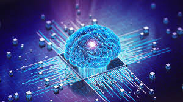

¿Qué es?
Es un campo de la informática que se enfoca en crear sistemas que puedan realizar tareas que normalmente requieren inteligencia humana, como el aprendizaje, el razonamiento y la percepción.
Tipos
Inteligencia Artificial Estrecha (ANI)
Se especializa en un área y resuelve un problema específico. Por ejemplo, un sistema de recomendación de películas.
Aprendizaje Automático
Es una subcategoría de la inteligencia artificial que se enfoca en desarrollar algoritmos que permiten a las máquinas aprender de datos y mejorar su desempeño sin ser explícitamente programadas.
Inteligencia Artificial General (AGI)
Se refiere a una computadora que es tan inteligente como un humano en todos los ámbitos, capaz de realizar cualquier tarea cognitiva que un ser humano pueda realizar.
</h3>
<p>Un intelecto que es mucho más inteligente que el mejor cerebro humano en prácticamente cualquier campo, incluyendo la creatividad, la toma de decisiones y el razonamiento.</p>
<img src=)
Ejemplos
Los asistentes de voz: los compañeros más fieles
Asistentes como Siri, Alexa y Google Assistant son ejemplos de inteligencia artificial que utilizan procesamiento de lenguaje natural para interactuar con los usuarios y ayudar en tareas diarias.
Reconocimiento de imágenes: viendo el mundo digitalmente
Sistemas como los utilizados en las redes sociales para etiquetar fotos o en la seguridad para reconocer caras, son ejemplos de IA aplicada al reconocimiento de imágenes.
Vehículos autónomos: el futuro del transporte
Los coches autónomos utilizan IA para navegar y tomar decisiones en tiempo real, demostrando cómo la IA puede transformar la industria del transporte.
Conclusiones
La inteligencia artificial está cambiando rápidamente el mundo en que vivimos, ofreciendo nuevas oportunidades y desafíos. Desde la automatización de tareas hasta la mejora en la toma de decisiones, la IA promete transformar diversas áreas de nuestra vida.
La inteligencia artificial (IA) tiene el potencial de transformar profundamente nuestras vidas, mejorando la eficiencia, la precisión y la accesibilidad en una variedad de áreas. Sin embargo, el abuso de la IA plantea preocupaciones éticas significativas que deben ser cuidadosamente consideradas y abordadas.